Alhambra color palettes: historical pigments from the Nasrid dynasty
Source:vignettes/alhambra-palettes.Rmd
alhambra-palettes.RmdHistorical context: the Nasrid dynasty
The Alhambra palace complex in Granada, Spain, represents the pinnacle of Islamic art and architecture in Al-Andalus, the name of Iberian Peninsula during the Muslim presence. Built primarily during the Nasrid dynasty (1232-1492), its color schemes reflect both the aesthetic principles of Islamic geometric art and the practical constraints of 13th-14th century pigment technology Fernández-Puertas (1997).
koloRo includes over 50 authentic Alhambra color palettes derived from spectroscopic analysis of original pigments (García-Bueno & Medina-Flórez (2004); Cardell & Navarrete (2006)) and historical documentation.
The Alhambra color palette collection
# View all Alhambra palettes
plot_category("alhambra", max_display = 15)
#> Showing first 15 of 30 palettes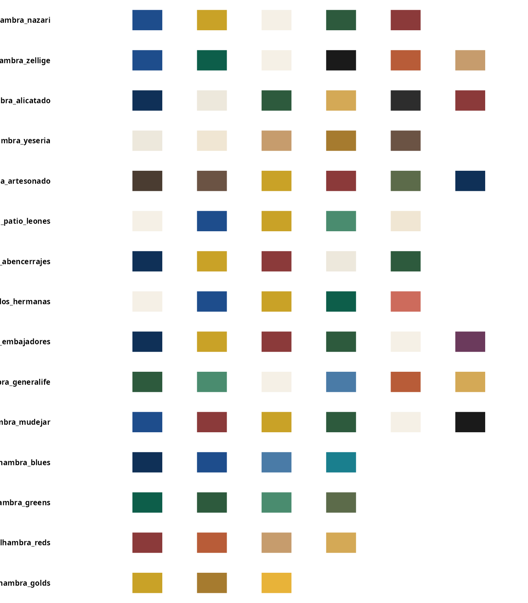
Authentic pigments and their sources
The colors of the Alhambra were created using natural minerals and organic materials available in medieval Al-Andalus.
Blues (cobalt oxide, lapis lazuli)
plot_palette("alhambra_blues")| Color | Hex | Historical source |
|---|---|---|
| Azul cobalto | #1E4D8C | Primary blue from cobalt oxide |
| Azul profundo | #0F3057 | Deeper shade for shadows |
| Azul celeste | #4A7BA7 | Weathered/oxidized cobalt |
| Azul turquesa | #1A7F8E | Copper-based blue-green |
Greens (malachite, verdigris)
plot_palette("alhambra_greens")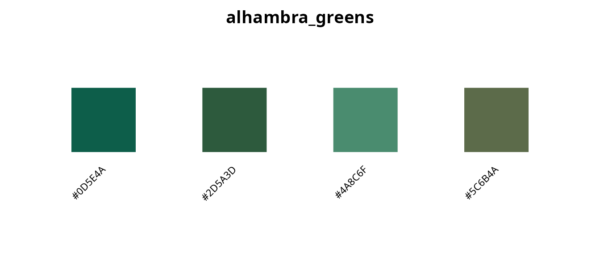
| Color | Hex | Historical source |
|---|---|---|
| Verde malaquita | #0D5E4A | Crushed malachite stone |
| Verde alhambra | #2D5A3D | Characteristic palace green |
| Verde cardenillo | #4A8C6F | Copper acetate (verdigris) |
| Verde oliva | #5C6B4A | Mixed earth pigments |
Reds and ochres (iron oxides)
plot_palette("alhambra_reds")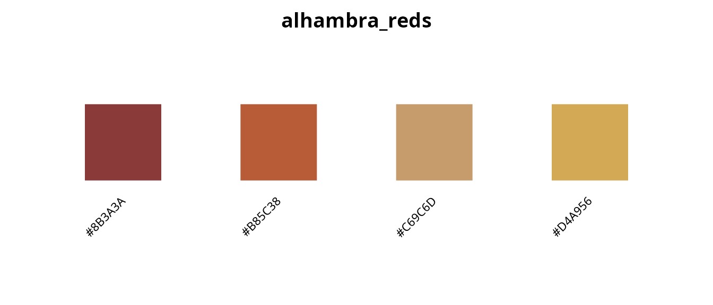
| Color | Hex | Historical source |
|---|---|---|
| Rojo almagre | #8B3A3A | Hematite-based red ochre |
| Terracota | #B85C38 | Fired clay pigment |
| Ocre dorado | #C69C6D | Yellow-orange iron oxide |
| Ocre amarillo | #D4A956 | Lighter yellow ochre variant |
Golds (gold leaf, amber resins)
plot_palette("alhambra_golds")| Color | Hex | Historical source |
|---|---|---|
| Oro nazarí | #C9A227 | Royal gold color |
| Oro viejo | #A67B2F | Oxidized/aged gold |
| Ámbar | #E8B339 | Amber resin color |
Whites (lime, gypsum)
plot_palette("alhambra_whites")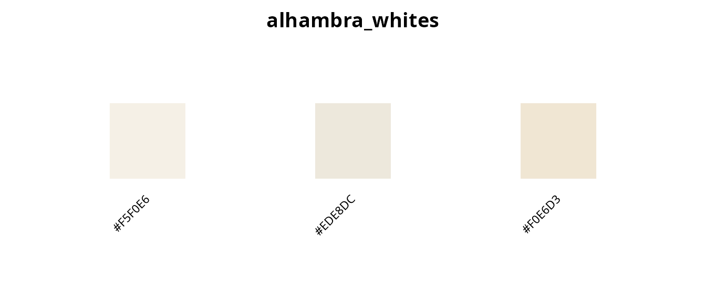
| Color | Hex | Historical source |
|---|---|---|
| Blanco cal | #F5F0E6 | Lime wash (calcium carbonate) |
| Blanco yeso | #EDE8DC | Gypsum plaster |
| Marfil | #F0E6D3 | Aged white/ivory |
Darks (carbon, earth)
plot_palette("alhambra_darks")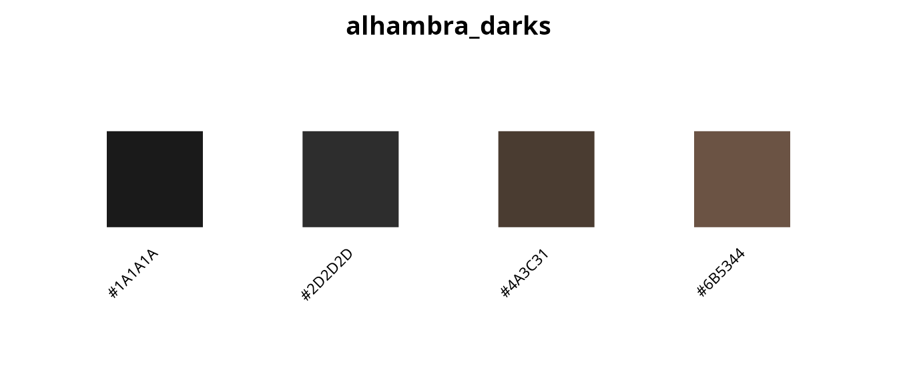
| Color | Hex | Historical source |
|---|---|---|
| Negro carbón | #1A1A1A | Carbon black for outlines |
| Negro suave | #2D2D2D | Softer black |
| Pardo oscuro | #4A3C31 | Dark cedar wood |
| Pardo claro | #6B5344 | Light weathered wood |
Location-based palettes
Each major space in the Alhambra has a distinct color character:
Patio de los Leones (Court of the Lions)
plot_palette("alhambra_patio_leones")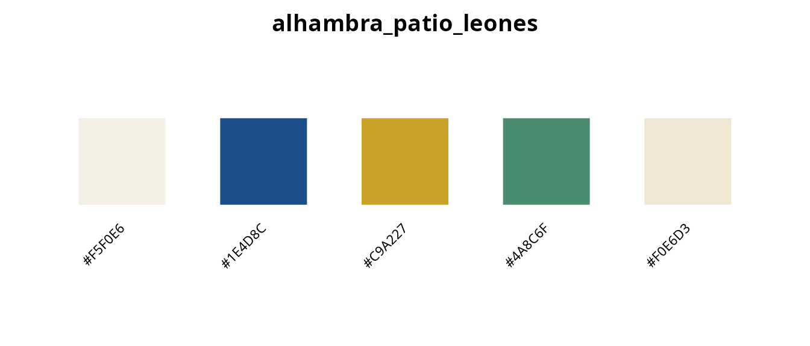
The Court of the Lions features an elegant, light palette dominated by white marble, blue tiles, and gold accents.
Sala de los Abencerrajes (Hall of the Abencerrajes)
plot_palette("alhambra_sala_abencerrajes")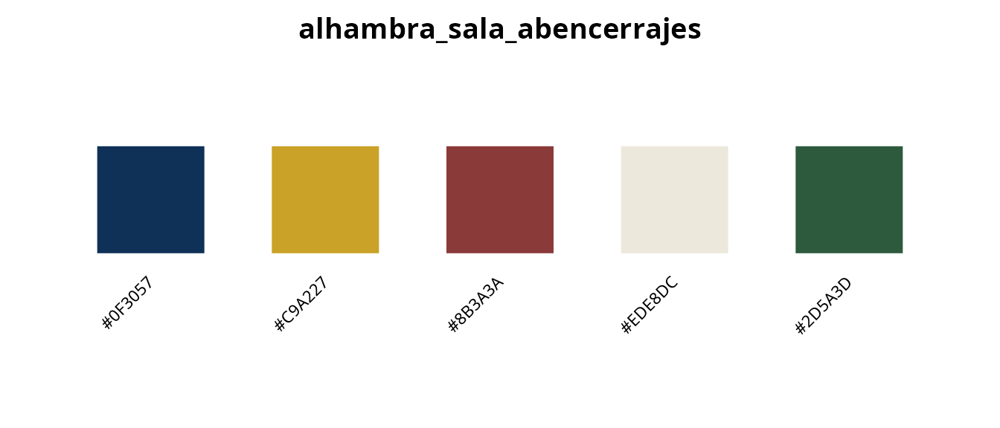
This hall is known for its spectacular muqarnas ceiling and rich, deep color scheme.
Sala de las Dos Hermanas (Hall of the Two Sisters)
plot_palette("alhambra_dos_hermanas")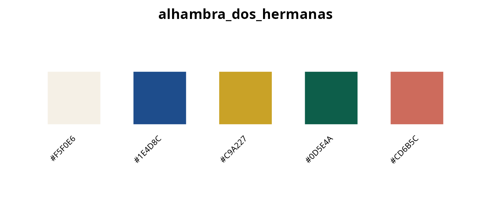
Features delicate polychrome work with intricate geometric patterns.
Sala de los Embajadores (Hall of the Ambassadors)
plot_palette("alhambra_embajadores")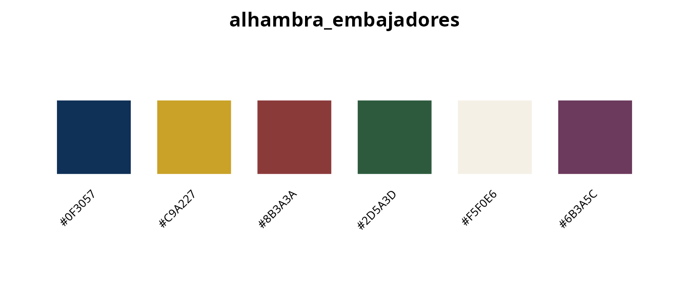
The throne room, with the most elaborate and richest color scheme.
Generalife gardens
plot_palette("alhambra_generalife")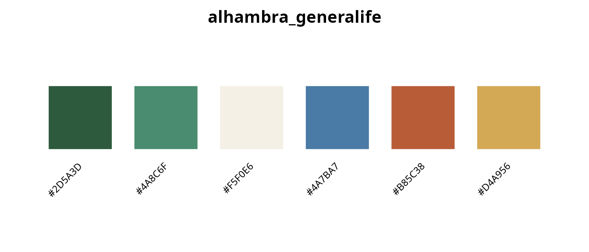
The summer palace gardens feature more naturalistic greens with terracotta accents.
Period-specific palettes
The Nasrid color palette evolved over time:
plot_palette(c("alhambra_early_nasrid", "alhambra_peak_nasrid", "alhambra_late_nasrid"))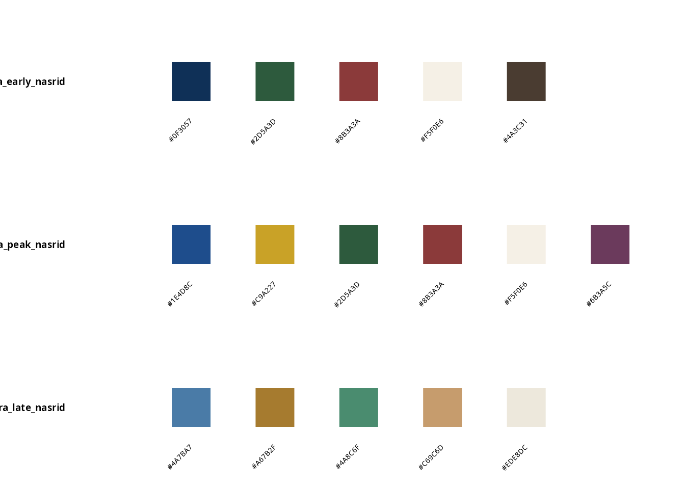
Early Nasrid (13th century)
The early period featured a limited palette consisting primarily of deep blue, green, red, white, and brown, reflecting both aesthetic preferences and economic constraints. Geometric patterns were simpler during this formative period, and gold was used sparingly due to resource limitations.
Peak Nasrid (14th century)
During the reigns of Yusuf I and Muhammad V, the Nasrid color palette reached its full expression with prominent use of gold throughout the palace complex. Artisans developed complex polychrome designs featuring sophisticated color modulation techniques that created three-dimensional illusions on flat surfaces. This period also saw the introduction of royal purple derived from kermes and murex, marking the height of Nasrid decorative arts.
Using Alhambra palettes for geometric art
The Alhambra palettes are ideal for creating Islamic-inspired geometric patterns:
Color manipulation for depth
# Base color
base <- "#1E4D8C" # Alhambra blue
# Create depth variants
shadow <- shadow_color(base, intensity = 0.3)
highlight <- highlight_color(base, intensity = 0.3)
cat("Base:", base, "\n")
#> Base: #1E4D8C
cat("Shadow:", shadow, "\n")
#> Shadow: #1C3A62
cat("Highlight:", highlight, "\n")
#> Highlight: #3A6CAFPattern generation
# Generate colors for a geometric pattern
n_tiles <- 50
# Cyclic coloring - regular repetition
cyclic <- pattern_colors(n_tiles, "alhambra_nazari", method = "cyclic")
head(cyclic, 10)
#> [1] "#1E4D8C" "#C9A227" "#F5F0E6" "#2D5A3D" "#8B3A3A" "#1E4D8C" "#C9A227"
#> [8] "#F5F0E6" "#2D5A3D" "#8B3A3A"
# Gradient coloring - smooth transitions
gradient <- pattern_colors(n_tiles, "alhambra_nazari", method = "gradient")
head(gradient, 10)
#> [1] "#1E4D8C" "#2B5383" "#395A7B" "#476173" "#55686B" "#636F62" "#71765A"
#> [8] "#7F7D52" "#8D844A" "#9B8B41"Example: creating a simple pattern
# Create a simple grid pattern with Alhambra colors
set.seed(42)
cols <- palettes(palette = "alhambra_nazari")
# Create grid
n <- 10
x <- rep(1:n, n)
y <- rep(1:n, each = n)
colors <- pattern_colors(n^2, "alhambra_nazari", method = "cyclic")
plot(x, y, col = colors, pch = 15, cex = 4,
xlim = c(0, n + 1), ylim = c(0, n + 1),
xlab = "", ylab = "", axes = FALSE,
main = "Alhambra Nazari pattern")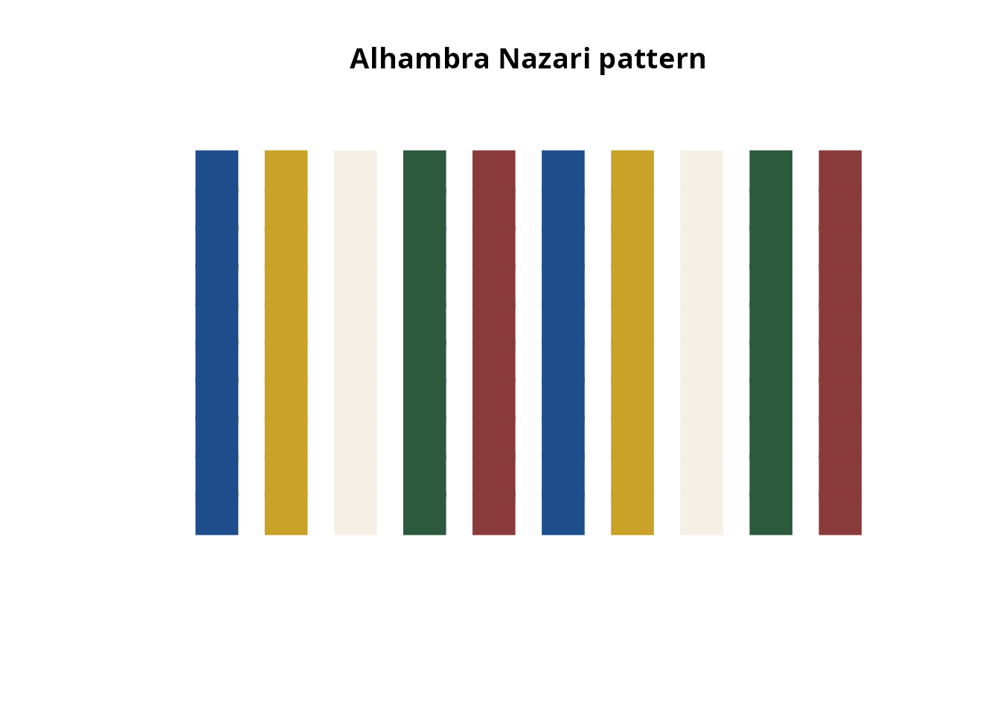
Functional palettes
koloRo includes pre-designed palettes for specific use cases:
High-contrast geometric patterns
plot_palette("alhambra_geometric")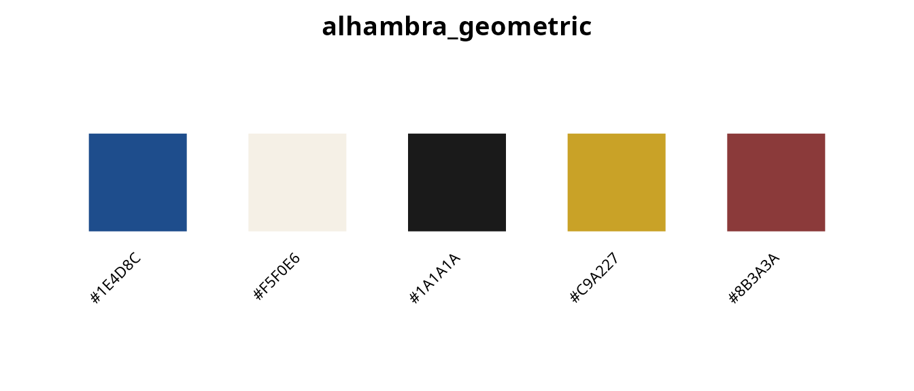
Designed for clear pattern definition with maximum contrast.
Minimal two-tone combinations
plot_palette(c("alhambra_minimal_blue_white", "alhambra_minimal_green_white", "alhambra_minimal_gold_blue"))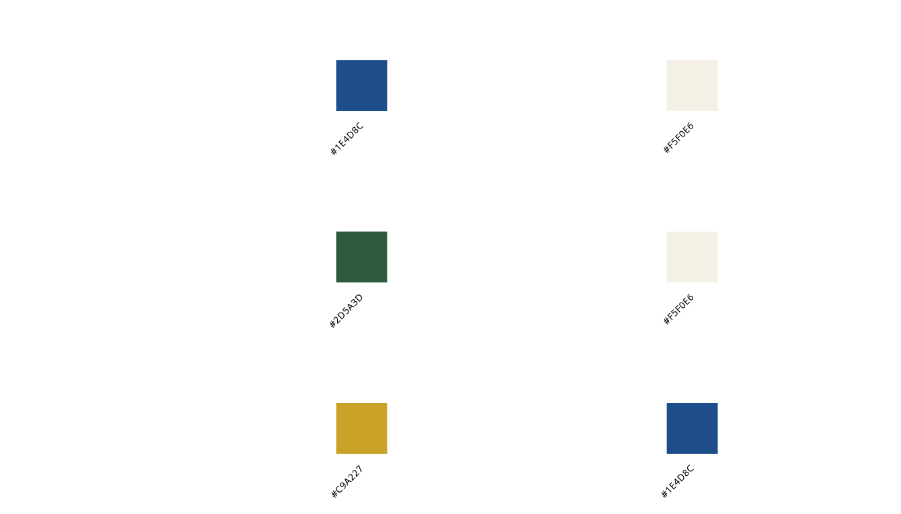
Scientific validation
Modern restoration efforts have used spectroscopic analysis to identify original pigments (García-Bueno & Medina-Flórez (2004); Cardell & Navarrete (2006)):
- X-ray fluorescence (XRF): Confirms cobalt in blues
- Raman spectroscopy: Identifies malachite and verdigris
- Infrared reflectography: Reveals carbon black underdraws
- Pigment stratigraphy: Shows original vs. restoration layers
The colors in koloRo are based on these scientific analyses, not approximations.
Complete inventory
alhambra_list <- list_palettes(category = "alhambra")
knitr::kable(alhambra_list, caption = "All Alhambra palettes")| palette_name | category | n_colors |
|---|---|---|
| alhambra_nazari | alhambra | 5 |
| alhambra_zellige | alhambra | 6 |
| alhambra_alicatado | alhambra | 6 |
| alhambra_yeseria | alhambra | 5 |
| alhambra_artesonado | alhambra | 6 |
| alhambra_patio_leones | alhambra | 5 |
| alhambra_sala_abencerrajes | alhambra | 5 |
| alhambra_dos_hermanas | alhambra | 5 |
| alhambra_embajadores | alhambra | 6 |
| alhambra_generalife | alhambra | 6 |
| alhambra_mudejar | alhambra | 6 |
| alhambra_blues | alhambra | 4 |
| alhambra_greens | alhambra | 4 |
| alhambra_reds | alhambra | 4 |
| alhambra_golds | alhambra | 3 |
| alhambra_whites | alhambra | 3 |
| alhambra_darks | alhambra | 4 |
| alhambra_geometric | alhambra | 5 |
| alhambra_earth | alhambra | 5 |
| alhambra_cool | alhambra | 6 |
| alhambra_warm | alhambra | 6 |
| alhambra_sunset | alhambra | 6 |
| alhambra_spectrum | alhambra | 8 |
| alhambra_minimal_blue_white | alhambra | 2 |
| alhambra_minimal_green_white | alhambra | 2 |
| alhambra_minimal_gold_blue | alhambra | 2 |
| alhambra_early_nasrid | alhambra | 5 |
| alhambra_peak_nasrid | alhambra | 6 |
| alhambra_late_nasrid | alhambra | 5 |
| alhambra_restoration | alhambra | 6 |
References
Fernández-Puertas, A. (1997). The Alhambra: From the ninth century to Yusuf I (1354). London: Saqi Books. ISBN: 978-0-86356-466-6
García-Bueno, A., & Medina-Flórez, V.J. (2004). The Nasrid plasterwork at “qubba Dar al-Manjara l-kubra” in Granada: Characterisation of materials and techniques. Journal of Cultural Heritage, 5(1), 75-89. doi:10.1016/j.culher.2003.02.002
Cardell, C., & Navarrete, L. (2006). Pigment and plasterwork analyses of Nasrid polychrome stucco in the Alhambra (Granada, Spain). Studies in Conservation, 51(3), 161-176. doi:10.1179/sic.2006.51.3.161
Abas, S.J., & Salman, A.S. (1995). Symmetries of Islamic Geometrical Patterns. Singapore: World Scientific. doi:10.1142/2301
Dodds, J.D. (Ed.). (1992). Al-Andalus: The Art of Islamic Spain. New York: Metropolitan Museum of Art.